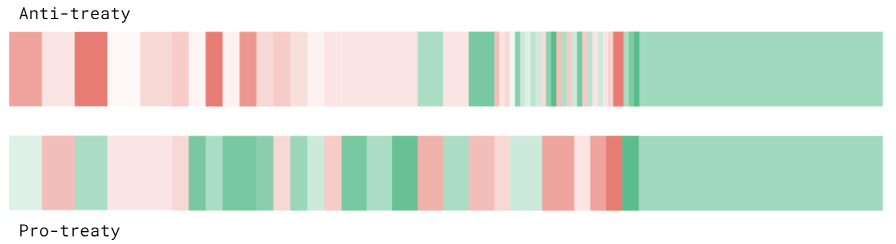
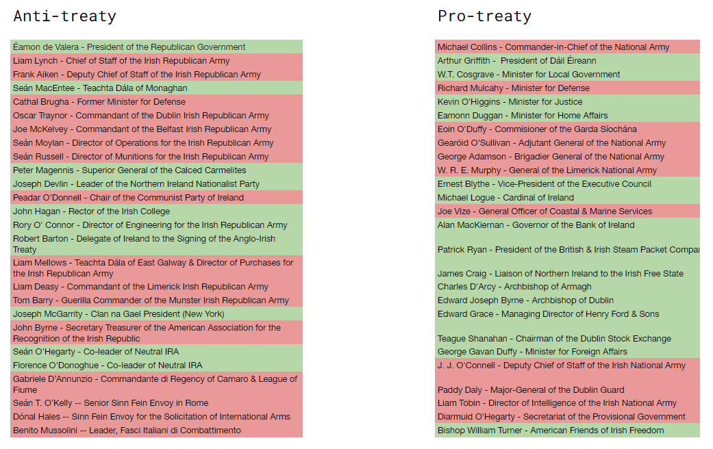

redesigning the Model UN crisis format
Over the last eight months, I staffed the Historical Joint Crisis Committee for PACMUN 2020. The conference ran virtually through Zoom and Slack over a single November weekend. My task as the joint director was to design the crisis itself.
Model UN crisis might seem pointless even when it is historically rigorous. We're inventing a storyline, characters, animating battles with entirely too much seriousness. The crisis format as a whole has earned a not entirely-undeserved reputation as glorified Dungeons and Dragons.
But what many people don't realize is that designing a joint bloc crisis can be a very elegant problem. In Historical Joint Crisis Committee, instead of a single committee, we effectively have two committees, known as blocs. These two blocs are in conflict with one another: perhaps the Warsaw Pact versus NATO, or the Bolsheviks versus the Romanov Monarchy.
The elegance of crisis design lies in the fact that while the crisis appears to be about the conflict between two blocs, our true goal as staffers is sustaining disagreements within each bloc. It would be within those blocs, separate and insular committees, where delegates would spend the vast majority of their time: persuading their bloc to follow their lead, navigating internal politics, gathering votes and supporters.

So the goal of crisis design, in creating debate, was to maximize disagreeement within blocs. And in order to do that, we needed to create situations in which two reasonable delegates within a bloc could differ on the right thing to do. Our job was then to orchestrate a series of strategic interactions between two blocs, where no single strategy should be perceived to dominate.
What follows is the process of designing a Model UN crisis committee from first principles, and my reflections on how it fared in practice. I think that most of the potential in crisis continues to go unrealized. I hope that through reading this, you will gain an appreciation for that potential, and understand why crisis design is an interesting and motivating problem.
"diplomacy is not a spectator sport"
Model UN is a high school extracurricular activity which takes place in committees, usually modeled after organizations within the UN, such as the World Health Organization or the United Nations Environmental Programme. However, some committees, known as crisis committees, are not based on the UN, but on an international crisis: perhaps the Cuban Missile Crisis, or the Mongol conquest of China.
In Historical Joint Crisis, the two blocs that compete with one another are drawn from an historical crisis. The delegates in each bloc assume roles, some real and some invented, from that crisis. In our case, we chose the Irish Revolutionary Period, with the Anti-treaty and Pro-treaty blocs:

Our delegates can do two things within their bloc.
First, they can make speeches to the rest of their bloc, trying to convince one another to take particular actions which are not within their own power.
Governor of the Bank of Ireland:
Up here on the Bulletin board, it mentions how the local government council is talking about driving the communists from our land -- it sounds like they're upset at [bloc 1]'s support of the USSR. If we could maybe bank on that and send a radio broadcast, we're not with the communists and you should support us, it might be able to get our popular support up and in turn get our army reserves up.
Second, they can take actions themselves by writing directives and passing them up to the committee dais (us, the staff), essentially a note which details an action like so:
PRO-TREATY 11/21/2020 13:27:33
Director of Intelligence of the Irish National Army, Private Covert
I wish to use my recently established intelligence network to try to find information on the whereabouts of the captured field marshal. Since I have intelligence agents that presumably have infiltrated the anti-treaty forces, I wish to use some of them to find out where the anti-treaty bloc has taken their British prisoner.
brief topic note
We chose the Irish Revolutionary Period as the setting for our committee due to the wealth of diplomatic issues for delegates to explore, and the complex divide between the Anti-treaty bloc (the IRA), and Pro-treaty bloc (Provisional Government). The history of our crisis was interesting in its own right: the two blocs were both led by Irish nationalists, allies who had divided bitterly over the Anglo-Irish Treaty. We also drew from the League of Fiume, a self-proclaimed Anti-League of Nations, and the American Friends of Irish Freedom, a secretive Irish nationalist organization within the United States.
With our topic out of the way, my goal shifted to creating the most interesting and engaging crisis possible. This would occur only if we had incentives for diverse and meaningful disagreements.
delegate roles and finding the appropriate limitations
I sympathize deeply with escape room employees. Simulations are hard when the participants think that breaking their rules are the key to winning them.
Crisis delegates each have specific roles within their bloc. They might be representing a special interest group, like the Leader of the Calced Carmelites or the Governor of the Bank of Ireland. They might also have a specialization within their organization, like the Director of Munitions for the IRA. No matter their role, delegates are usually very committed to the victory of their bloc. Within their assigned powers, they are trying to do anything they can to help their bloc win, no matter how realistic it would be in real life.
Intelligence roles will write up plans for worldwide surveillance networks out of rural villages and farms. Foreign liasons will happily commit the entirety of their own country's national forces for the purposes of their bloc. Tech roles will claim to discover the inner workings of nuclear fission just as their bloc prepares for war.
ANTI-TREATY 11/21/2020 10:23:07
Benito Mussolini, Private Overt
I would like to donate 10,000 troops to the IRA.
We didn't want to fulfill everything that delegates asked for. That encouraged delegates to abuse their powers by spamming directives.
Yet we also didn't want to restrict delegates from writing creative and interesting proposals by failing them all. If there was only a single number that mattered at the end of the crisis, like the number of troops each side had, then directives would come to center around that single meaningless number. It would become pointless to discuss anything else. So, encouraging diverse directives was important, even if delegates asked for too much most of the time.
The ideal way to limit the power of delegates, in terms of historical accuracy and ability to generate interesting discussion, would have been defining a money resource, and forcing each bloc to negotiate a budget.
The only problem was that the economics were too hard. How much did running a military cost? How much did the Provisional Government collect in income taxes? We couldn't define a few variables in a resource tracker, set hard limits from our simplistic model, and expect delegates to find them reasonable.
I think the solution we eventually came up with was a step in the right direction. While we did end up tracking several variables, they were soft variables: they were meant to be behavioral nudges, not shoves. Fundamentally, our design philosophy came to center on offering tradeoffs.
For example, we decided conducting assassinations meant losing the ability to appoint bodyguards. We decided that you had to lose all of a certain resource, such as rifles, to be able to manufacture an additional quantity. We decided that in order to acquire new technology, the necessary "research" required leaving committee and being unable to speak for a certain period of time.
Through inflicting opportunity costs, tradeoffs could preserve the agency of the delegates while keeping them from accumulating unfair advantages. And by creating actually difficult decisions, they could keep debate flowing and prevent mindless, unanimous votes.
Such tradeoffs are primarily a practical consideration, but they do have some elegance of their own. They are symmetrical, offering the same capacities to both blocs, and toggleable. A bloc could revert a tradeoff, but couldn't perform that same tradeoff over and over again.
diplomacy through the A/D lens
From these first principles of tradeoffs, our setup slowly emerged.
Remember when I said that you can't really simplify a historical crisis? I take that back. You can't use money to simplify a crisis. In Model UN, everything, even crisis, is about diplomacy, and in diplomacy intent is all-important.
There was a diplomat who was a keynote speaker at a MUN conference I attended in sophomore year. His speech was all about about his work in Cyprus facilitating negotiations with the Greek and Turkish Cypriots. He emphasized how much work went into trust building exercises, planning small acts of cooperation so that real negotiations could happen later. It was a long, incremental process, with many false starts and miscommunications. But often these exercises were the only way towards measurable progress.
Taking this angle of interpretation, we could think about our crisis as a series of potential trust building exercises, each bringing the blocs a little bit closer (or farther) from diplomacy.
Then, the basic mechanic of our crisis could be a measure of the trust inherent to a delegate's action, quantified through an aggressiveness/diplomacy rating for each directive.
Whenever a directive was passed, signaling an action taken by one bloc, we rated it on a scale: -1 being most diplomatic, 1 being most aggressive. Moving troops towards the border would be a very aggressive action, earning a 0.8 score. Removing troops away from the border would be a a very diplomatic action, earning a -0.8 score. Raising taxes to fund the war chest would be a slightly aggressive action, earning a 0.2 score.
PRO-TREATY 11/21/2020 11:09:47
Minister for Defense, Public
I propose a public radio broadcast that states that we do not have the intention of war. I also propose that a private message is sent to the British government warning them of a potential kidnapping.
Earns a rating of -0.2
ANTI-TREATY 11/21/2020 11:11:11
Gabriel D'Annuzio, Benito Mussolini, Public
1. An IRA agent under the cover of darkness throws a row of spikes on the road the motorcade of the British general is traveling on
2. When the british general and his guards travel upon the road by daytime, his car will suffer all 4 flat tires and his guards will have to get out to inspect the damage
3. When his guards are exposed, a neatly polished 4-door vehicle with a conspicuous irish clover leaf plastered on the door will pull up alongside the general’s car
4. 6 Neatly dressed IRA agents wearing ties, suits, and dress suits equipped with tommy submachineguns will blast the exposed guards inspecting the tires and force the general into the irish car under gunpoint and kidnap him
5. Have the IRA shout pro-irish mottos at bystanders to let people know the irish kidnapped him.
Earns a rating of 0.7
By scoring every directive that was passed, we were able to establish a track record of escalations and deescalations, allowing us to visualize the crisis. Here's the path of the crisis over the course of committee, with red directives being most aggressive and green directives being most diplomatic:

There's a lot of intentional regularity in the visualization above. We would work our basic scoring mechanic into a number of "invisible hands", aimed towards encouraging discussion and creating interesting conflicts.
intrabloc alignments through the A/D lens
The most obvious feature of the directive history was that the Anti-treaty bloc tended towards military action while the Pro-treaty bloc tended towards diplomacy early on. This was due to the pre-alignments of the delegates.
Just before the start of the committee, we assigned each delegate a secret pre-alignment. While they would work towards the victory of their own bloc, they would also have a second, private goal: to obtain that victory in a diplomatic or aggressive fashion.
Through this mechanism, we encouraged this split within each bloc by revealing the aggressiveness/diplomacy rating of each directive. Delegates could see if a directive was going to bring them closer to a military victory or a diplomatic victory, and choose only to vote for the actions which they approved of:

Those who favored a military approach would generally advocate to take their chances in combat, and pursue a military victory. On the other hand, those who favored a diplomatic approach would generally advocate to pursue negotiations, and pursue a diplomatic resolution.
There would be exceptions, as delegates made concessions on actions which they saw might be necessary for the bloc victory, but most of the time a bloc would be split along their pre-alignments.
We made sure not to give either pre-alignment the numbers necessary to dominate public directives, which required 2/3rds of the committee to pass. These directives were necessary for the most substantial actions, such as military operations or diplomatic communication between the blocs.
Consequently, for every public directive, members of one pre-alignment would have to convince members of the other pre-alignment to vote against their inner convictions, for the good of their bloc as a whole.
popular support through the A/D lens
The other obvious feature of the directive history is that around committee session three, the two blocs seem to flip-flop: the Anti-treaty bloc gets a whole lot more diplomatic and the Pro-treaty bloc gets a whole lot more peaceful. This was due to the influences of the popular support metric.
Some JCC history: Joint Crisis Committee, as one of the classic crisis committees, has been around in the same form for a pretty long time. I had participated in it three times (PACMUN 2019, BELMUN 2019, and STEMUN 2020) and staffed it once before, and their formats have all been very similar.
In this traditional JCC format, there were three separate ways to win:
- A military victory: control of 2/3 of the territory on the map
- A diplomatic victory: A treaty "overwhelmingly" in your bloc's favor
- A popular victory: obtaining the support of more than 80% of the population
However, JCC does not usually resolve through one of these conditions. The ending to a crisis is often improvised on the fly (and ours actually ended up this way as well, despite our best efforts to avoid doing so). It is a better idea to consider these "paths to victory" as goals which encourage delegate behavior, motivational failsafes if debate slows down.
The first two of these paths seem to work well within our new framework. The military victory and the diplomatic victory could just be the endings which the aggressiveness/diplomacy divide refer to.
It was dealing with this third path to victory that was especially tricky.
trying to fix popular support
In the past, popular support was simply a percentage which the dais would modify when a relevant action was passed. It would be directly affected by single directives. For example, a directive like "I order 300 of my troops to enter urban areas and paint murals glorifying our actions" could raise their bloc's popular support by 5% (and lower the other bloc's by 5% as well).
The result of this was a lot of directive spam: on airdrops of pamphlets, the distribution of propaganda, outreach and aid efforts. Because we couldn't track money, delegates could write many directives as they wanted on the subject without repercussions, making the metric useless. All popular support came to represent was which bloc was able to churn out more paper slips to the dais.
This version of popular support was abusable because it was arbitrary. It was unrelated to the substantive actions of that bloc, whether those were war crimes or humanitarian aid. Delegates could send directives explicitly targeting public support over and over, and dais were often forced to inflate or deflate popular support based on their own discretion.
Instead of popular support being an entirely independent aspect of the crisis, we redesigned it in the context of our aggressiveness/diplomacy metric, as a karmic attribute which took all of a bloc's previously passed directives into account.
Popular support was now based on a bloc's "track record". By interpreting popular support from this angle, we could define it as the public judgment of the aggressiveness/diplomacy ratings of directives.
the totally constant and predictable whims of public opinion
In order to be useful as a consideration in debate, this idea of public judgement needed to be impartial and predictable. Somewhat akin to Crane Brinton's Anatomy of a Revolution, we used the following heuristic:
During the course of an attempted revolution, the public generally tended to favor aggressive actions from the revolutionaries early on. In our case, these would be the irreconciliables, the anti-treaty members of the Irish Republican Army.
However, as they got tired of the stalemate and of bloodshed, people would begin to prefer aggression-- crackdowns-- from the voice of law and order. In our case, this would be the Provisional Government, in the enactment of martial law and arrests.
Consequently, we defined public sentiment to first prefer aggression from the anti-treaty bloc and then from the pro-treaty bloc. We modeled this with a sine function of half-period equal to the total number of committee sessions, or 6. Thus, public sentiment would prefer military action and then diplomacy from the Anti-treaty bloc, and prefer diplomacy and then military action from the Pro-treaty bloc.

Thus, diplomacy would be first encouraged from the Pro-treaty bloc and military aggression from the Anti-treaty bloc. Then, as the committee progressed, these would gradually flip.
Popular support was not a path to victory outright, but instead an indication of troop recruitment. Both blocs could view their popular support and military metrics on a provided resources tracker sheet. In this way, popular support could sway decisions.
Adding public judgement for comparison to the directive history, we can see clearly the effect it had on the type of directive being passed:

Although this version of popular support was able to influence the substance of directives passed to greater effect, directive spam continued to some degree.
Instead being swamped by directives about pamphlets, propaganda, and rousing speeches, we were swamped by directives about opening lines of communication, education on their diplomatic actions, public broadcasts issued to the people about their own goodwill.
See the red, and then swathes of green at the beginning of the Pro-treaty side? The Pro-treaty bloc, upon realizing that their aggressive start had not been appreciated by the public, sent a TON of diplomatic directives, most of which had dubious purpose beyond restoring popular support.
This was a nice example of Campbell's law, which also applies to things like SAT scores: "The more any quantitative social indicator is used for social decision-making, the more subject it will be to corruption pressures".
Delegates were still able to abuse popular support much in the same way they abused popular support in the past. They were simply sending directives about diplomacy, not directives about propaganda.
prisoner's dilemma through the A/D lens
Earlier, I mentioned that the initial paths to victory were not the actual way that a bloc crisis usually ended.
So how did a bloc win in our crisis?
The careful separation of actions taken by both sides into military and diplomatically oriented actions, the revision of popular support, the interbloc separations; we made the decision to have our ending hinge on an interaction styled after the prisoner's dilemma. This would be a single, final, interaction in which the two blocs would have to definitively choose whether to cooperate or not.
We introduced the dilemma in Dublin, the capital of Ireland and the most important territory by far in the entire map. For the majority of the committee, Dublin had been no-mans-land, heavily contested by both sides.
Our crisis update went like this:
A humanitarian Red Cross mission had entered the city, causing both sides to back away. The Red Cross mission requested a ceasefire, for both blocs to keep their troops out so that they could give out food and administer medical aid.
If neither bloc choose to take military action, Dublin would become a demilitarized zone, an important step towards a diplomatic resolution.
However, either bloc could choose to take military action and send their troops into the city, gaining the most important territory in the crisis for free.
If BOTH blocs passed directives to enter the city, they would come into military conflict with heavy loss of life.
The beauty of this update was that the delegates had to read the other bloc, try and predict what the other side would do. To make this decision, they had the past four committee sessions as data.
We had basically gifted the Intelligence roles the ability to view the aggressiveness/diplomacy rating of all directives on both sides, without seeing the text (a careful importrange() in google sheets):

This gave blocs the data from the directive history to consider: Does the other bloc seem like they cooperated in the past? Does the other bloc stick to their word on cooperation and conflict? Does their OWN bloc have a record which would entice the other bloc to cooperate?
the outcome
Both blocs ultimately chose to stay out of the city, risking military action from the other bloc in favor of pursuing a diplomatic victory. This matched my initial hypothesis that the natural instinct of delegates in Model UN to cooperate was too strong.
The timing of this crisis update was also important, as it was introduced about 2/3rd of the way through the committee. By then, the anti-treaty bloc had become predisposed to diplomacy, and the delegates from the pro-treaty side were able to anticipate that. As the majority of the pro-treaty side was diplomatically pre-aligned, they saw the chance to secure a diplomatic victory before their losses in popular support made such an option unviable.
But there was quite a lot of good discussion before they made their choices. The pro-treaty side was completely split at first, even when they sent official communication to the other bloc that they were "definitely" going to cooperate.
Commander In Chief of the National Army:
As commander in chief I want to advise you militarily wise -- we cannot sustain a longer war. Again we made our big show of force, we don't have as many troops to sustain a fight over dublin, or anything else very much for that matter. the best way we can have success in this committee is to go towards a diplomatic victory, whether or not we're aligned towards war or diplomat -- they played the beginning too well. now they have the intense military advantage -- we'll have to do a bit of trusting. I think we should draft a thing....
Director of Intelligence of the National Army:
But if we act down, and lose Dublin, we would lose a ton of popular support.. maybe tell them we're not going to. Try and trick them. We could tell them that no, we're not going to send troops in, and then send troops in.
Commander In Chief of the National Army:
The only problem with that is that it ruins all sense of trust when it comes to solving things diplomatically.
Director of Intelligence of the National Army:
We really only have two options -- one is to let troops in and let them seize control of Dublin -- as they have been doing for the rest of the committee. Or -- we can send troops in and fight for it.
Commander In Chief of the National Army:
It sounds like in both plans, we tell them that we don't want to send troops to dublin.
[the delegates pass the communication directive]
[the peace directive] is kind of how we have to move forward. i don't think we can win this militarily at this point in time.
The final vote in the pro-treaty bloc went 10-1 in favor of not sending in troops:

conclusion
Crisis design is very fun. The obviously fun part of crisis is traversing alternative timelines and making up history. After their impressive cooperation in Dublin, the two blocs pursued a joint diplomatic victory, getting the Irish Free State recognized as a member of the League of Nations and using their new international recognition to remove the British from their land. It wasn't exactly a realistic ending -- but it was interesting, and motivated by the actions of the delegates at the final crisis update. If they had chosen to fight it out over Dublin, we probably would have planned a climactic final battle.
And from the perspective of designing models, systems, social interactions -- crisis is also fun. Where else do you get to plan out CONFLICTS, between groups of people, and get the opportunity to watch them unfold? Seeing diplomacy occur in MUN is cool enough; watching a crisis evolve is so much cooler.
google sheets notes
The final state of our resource tracker:
Best way to assign privileges is to create one master sheet for the Joint bloc and then two bloc sheets, which can each view select ranges from the master sheet through the importrange() command.
Using conditional formatting on a map works pretty well for speedy editing. You can change the prefixes like "_" or "." on regions instead of having to pick a color manually each time.
A "weather" variable is a very useful mechanic in preventing disruptive actions like special operations and nighttime attacks. Set the weather to "heavy rain" when you want to have a good reason to fail ambitious sabotages on both sides.
You can use a sigmoid func, which looks like
=desired_newresource_ct/(1+exp(-((time-currenttime)/(duration/10) - 4))), for modeling variables as S-curves. This was useful for industrial production, like rifles and special units and such. In practice it was OK -- watching the growth was cool, but the resources went mostly unused.While we didn't get a chance to use this in our crisis, stock market can be modeled really quickly through a random walk. This is a nice way to track returns on investment. If a bloc had attempted to create companies or invest in things this would have been useful.
- For persisting continuously updating variables in Google Sheets: use two cells, one is the variable and the other is the change in the variable. When Sheets asks you to resolve iterative calculations, resolve at step 1.
- Write in pre-generated random numbers as plain text, as the
rand()function will recalculate every time you modify the sheet. Time based variables are a good way of "quantifying" something quite vague (i.e. is the british field marshal still in Ireland? yes, until 100 minutes have passed).
The following Apps Script increments a single cell every minute, which is how we got a time variable working:
function myFunction() {
ScriptApp.newTrigger('updateCount')
.timeBased()
.everyMinutes(1)
.create();
}
function updateCount(){
var sheet = SpreadsheetApp.getActiveSheet();
var ct = parseInt(sheet.getRange("'Bulletin Board (Shared)'!A1").getValue());
sheet.getRange("'Bulletin Board (Shared)'!A1").setValue(ct+1);
}